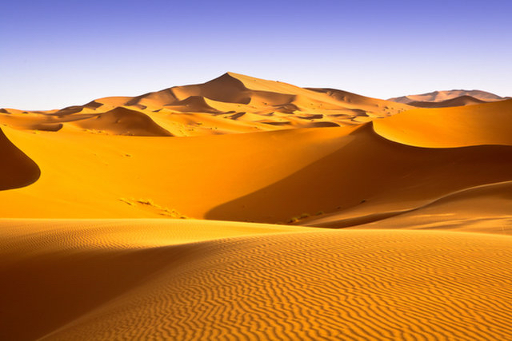

Where Are They From
Fennec foxes are sometimes called "desert foxes" because they live in the desert zones of North Africa and the Sinai and Arabian peninsulas. Fennec Foxes are nocturnal cuties and avoid the daytime heat of the desert environment.